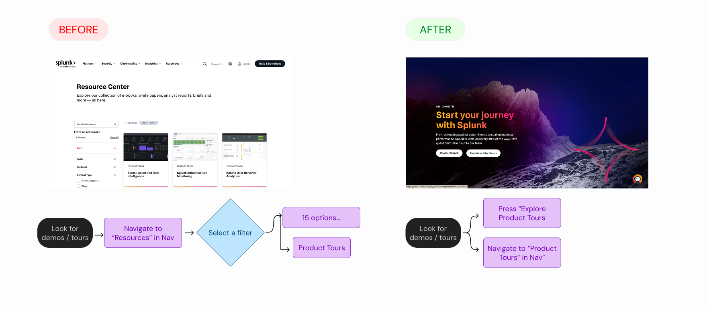
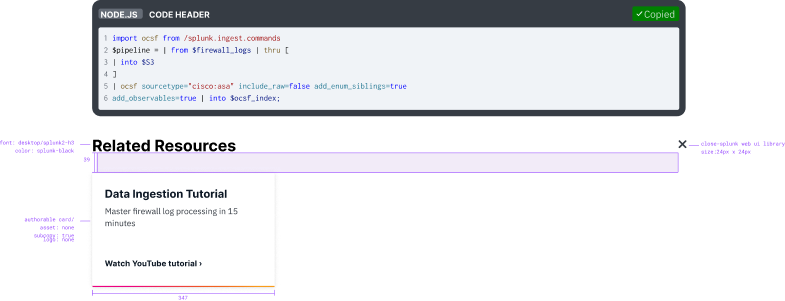

Cisco Splunk · UX Design Intern · Growth Marketing · Summer 2025
Turning post-acquisition friction into shipped work, a shared roadmap, and an AI proposal — in 12 weeks.
I joined Splunk’s Growth Marketing team after Cisco’s acquisition, when users were moving through fragmented surfaces across multiple domains. In 12 weeks, I supported multiple scrum teams, launched a live Demo Center, turned ecosystem issues into sprint-ready recommendations, and proposed an AI-powered code snippet experience that grew from a hackathon idea into a formal proposal.
Enterprise UX
Growth design
AI product thinking
Shipped work
Cross-team influence
Launch
Live
Demo Center shipped on splunk.com
Influence
6
sprint teams used audit findings
Research
8
users tested Demo Center direction
AI concept
6/6
users responded positively in concept testing
Finding leverage
I was assigned ambiguous problems, then found one more opportunity on my own.
My assigned work focused on a heuristic audit and Demo Center. While working across Growth Marketing scrum teams, I also noticed a high-intent moment in technical blog code snippets and turned it into an AI personalization proposal through an org hackathon.
01 · Ecosystem friction
Cisco and Splunk experiences had inconsistent navigation, redundant content, dead ends, and brand confusion.
02 · Hidden product value
Demos existed, but there was no clear source of truth for users evaluating Splunk products.
03 · Missed intent signal
Developers copied code snippets and left without being guided to relevant tutorials, docs, or next steps.
Team
Growth Marketing, supporting multiple scrum teams.
Partners
Product owner, UXR, product designers, engineers, and scrum masters.
How I worked
Balanced assigned priorities with self-initiated exploration.
Opportunity 01 · Ecosystem audit
Turned known fragmentation into a roadmap 6 sprint teams could act on.
Leadership knew the acquisition created inconsistencies, but the team needed a clearer picture of where those problems lived and which ones mattered most. I audited 8+ domains using Nielsen heuristics, Mouseflow recordings, and competitive analysis to make the friction visible and actionable.
What I found
Dead ends and weak recovery paths
Redundant content across domains
Inconsistent navigation and flow
Brand confusion between Cisco and Splunk surfaces
What I delivered
Prioritized recommendations spreadsheet
Roadshow presentations across the org
Team-specific recommendation views
Interactive prototype built with Claude Code for stakeholder exploration
Impact
The audit moved from documentation into planning. Findings were shared through a roadshow and incorporated into sprint planning across 6 teams.
Opportunity 02 · Demo Center
Launched a centralized Demo Center so users could actually find product demos.
Splunk had useful demos, but they were scattered across the site. Users had to move through multiple layers of navigation before they could evaluate product value. I designed the information architecture, component strategy, copy hierarchy, and responsive layouts for a new Demo Center that became the source of truth for demos.

Before and after user flow of Demo Center Experience.
Final Demo Center experience, live on splunk.com.
Tested with
8 users reviewed the direction and helped clarify what mattered most.
What changed
Users prioritized new demos, so I pushed for clearer emphasis around new and featured content.
Tradeoff
Some users asked for durations. Stakeholders confirmed demos were self-paced, so I avoided adding misleading time labels.
View live Demo Center ↗
Post-launch, the page’s success is being tracked through demo engagement and downstream product sign-ups.
Opportunity 03 · AI snippet
Identified a high-intent exit moment and designed an AI-powered next step.
Technical blog snippets were visually weak, hard for QA to update, and treated copy actions as the end of the journey. I saw the copy moment differently: when a developer copies code, they are signaling intent. Through an org hackathon, I explored how Cisco’s AI direction could turn that moment into relevant tutorials, docs, and next steps.
AI-powered follow-up concept: personalized resources based on snippet content, page context, and user behavior.
Why stakeholders liked it
The concept improved the snippet UI, introduced a practical personalization use case, and showed initiative beyond my assigned internship projects.
What testing changed
All 6 users in concept testing responded positively. One clear change came out of it: making the copy interaction more explicit by using the word “Copy.”

Snapshot of visual specs of code snippet

Snapshot of interaction specs of code snippet
What I would refine now
At the time, I was newer to designing for AI trust. If I continued the work today, I would make the reasoning behind each recommendation clearer, add stronger user controls, and test how much personalization users actually want in a technical workflow.
Impact & reflection
This internship taught me how to create momentum inside a large organization.
I came in as an intern, but the work taught me how to influence through evidence, communicate across teams, and find product opportunities that connect user behavior to business value. Along the way, I also taught a Figma Make workshop for the team — sharing the AI-assisted design workflow I had been using all summer.
01Leverage beats polish. I learned to look for the points where a design decision could unlock broader clarity instead of only improving one screen.
02Evidence moves decisions. Mouseflow recordings, usability testing, and competitor patterns gave me stronger ways to advocate for design choices.
03Opportunities rarely arrive assigned. The AI snippet concept started as my own hackathon exploration and became a formal proposal because stakeholders saw the value.